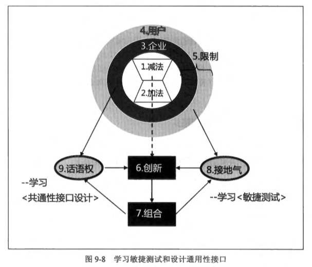

通常，架构设计分为A段和B段：
获利思维：让用户<占便宜>
成本思维：让用户<捡便宜>货
掌握<系统控制点>支撑<商业话语权>：
1.领悟：取得系统接口(API)定义权，就掌握控制点
2.掌握：设计&定义API，有效取得系统融合的控制（中心）点
3.理解：认识自己企业的商业模式，厘清自己企业在商业合作策略上能够（想要）取得什么话语权？也就是，让自己企业在商业（组织的）合作层面，有哪些机会能位居中心点
4.目标：让系统中心点与商业组织中心点，两者相辅相成、互相辉映
5.途径：依托于自己企业在商业合作既有（或将有）的中心点或话语权；发挥架构师的洞悉力，设计出相称的系统架构，并位居系统中心点。于是，系统中心依托于商业合作中心的话语权；而后，系统中心则是反过来，强化自己企业在组织合作的中心角色
6.变革：相对上，系统中心偏于战术，而商业合作中心偏于战略。此时，架构师运用“战术引导战略”思维，致力于优化系统架构设计，发挥系统中心的力量，引导商业合作中心的转移到更好的市场机会，取得商业上的更成功。这就是俗称的“以技术推动企业转型或商业变革”
溯因逻辑是<假定-否证>的逻辑，透过检验方式，发现走不通的路，就删除之（减法）。是根据事物的因果关系的知识，从所观察到的已知结果追溯到其原因的一种推理方式。它是由已知的事实（Q：命题）为推理的逻辑起点，进而依据推理者的背景知识、生活常识等寻找导致该事实的原因（P：结论）；然后建立一个假定性的推理形式：若P则Q
关于对假定的否证的一个有效的迭代方法：将一个假定分解为较小的逻辑组成部分（议题），每次检验其中一个，然后一个一个地加以检验，直到一个或其中一个解释具有不容质疑的根据为止
MECE就是“不重复，不遗漏”，就是把一个整体切分为多个部分，这些部分之间彼此独立而不重叠，而这些部分组合起来又呈现出一个整体，毫无遗漏
愿景：
分类与组合：
古典抽象思维包含两个重要动作：
4项假设性思维：
反思：愿景引发创意，不自觉的假设
假定：以事实来检验，待检验的假设
（观想）结果：全脑并用，完成性的假设
备胎：预见失败，万一性的假设
架构师的核心思维有4个元素：愿景、组合、创新、未来性
十个学习步骤：
第1步：减法，学习两种抽象视角，包括学习集装箱抽象视角，并力求减法设计
第2步：加法，关心下层的变动自由度（没钱就改版，改版就有钱），学习VISA互利心境，让更多供应厂商来抬轿
第3步：企业，让<系统架构控制力>支撑<商业竞争话语权>，基于商业思维，学习如何让架构设计支撑商业模式
第4步：用户，领悟<用户体验>是让用户享受从简单中叫出复杂的满足感，学习获利思维，让用户<占便宜>而不是<捡便宜>
第5步：限制，领悟创意爱上限制，即需求检验设计。学习创意的检验思维，准备以<需求围绕设计>进一步减法设计
第6步：创新，应用假设性思维，进行Mapping from vision to reality。学习创新思维，发挥溯因推理和四项假设性思维
第7步：组合，学习清晰而明确表述接口。学习组合思维，一方面支持敏捷测试，一方面支持通用性接口设计
第8步：尽快对接口进行检验和测试，学习敏捷思维，确保可实现性（接地气）
第9步：设计通用性接口，取得系统控制权
第10步：终于实践了<有效减法设计，才能开发加法>
加油设计幅度越大，系统的复杂性和差异化就越显著，此时标准化和统一化的呼声就越高
无论是标准化或统一化，都意味着加法设计的大量推进，导致系统复杂而难以驾驭；因而要求架构师提出有效的减法设计方案，从复杂中设计出简单，让人们能从简单中来掌控复杂
就架构师而言，基于有效减法的架构设计，才能开放人人去做加法设计

编码十大法则：
法则1：好莱坞大明星原则。从制高点出发，设计主动型API，对外发号命令。IoC、控制反转
法则2：共相与殊相并存法则（又称<通用性接口>与<特殊性接口>衔接法则）。设计命令通道；从通用性接口衔接到特殊性接口，让令能出衙门，普达天下
法则3：挟天子以令诸侯法则。落实特殊性接口，让天子命令普达天下。此外，还可以借机来挟天子以令诸侯，建立自己的新接口，取得制高点
法则4：Command flow 和 Data flow 分离法则。命令流指挥数据流动，力求数据流的效率极大化。
法则5：集装箱式抽象法则。运用集装箱抽象思维，运用简单造形，来包容多变的数据、通信或技术
法则6：基类创建子类对象法则。掌控集装箱，就能掌控物流；除了掌控框架层的集装箱，还要掌握应用层的集装箱（以子类来实践）
法则7：把基类当礼物送别人法则。基类内部可含有制高点，将我们的制高点赠送出去，赠送越多，我们的势力和版图就越大
在编译时，基类必须与子类合并，所以基类必须对子类开源
基类软件是要送人的，不是要卖钱的，送人的礼物要极为用心，做得精致
钓竿——框架里的基类，鱼钩——抽象函数，鱼饵——具象函数，鱼儿——应用APP
法则8：从简单组合出复杂法则。基于简单造形，从简单中组合出复杂，让系统逐渐有机成长，无限繁荣。多态
法则9：从简单中叫出复杂法则。创造商业价值，尤其是替客户创造价值，让客户占便宜
法则10：没钱就改版，改版就有钱法则。一个平台就是一只轿子，谁来抬轿而让我们坐轿子呢？如何替抬轿者（当然不是客户或用户）创造获利，才有更多人竞相来抬轿